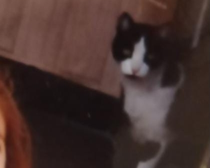
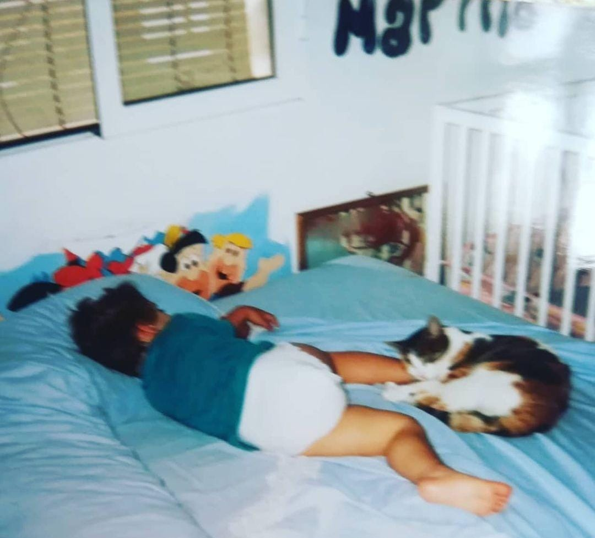
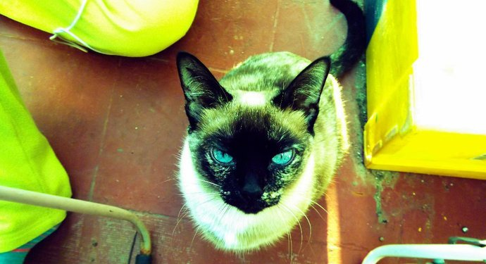
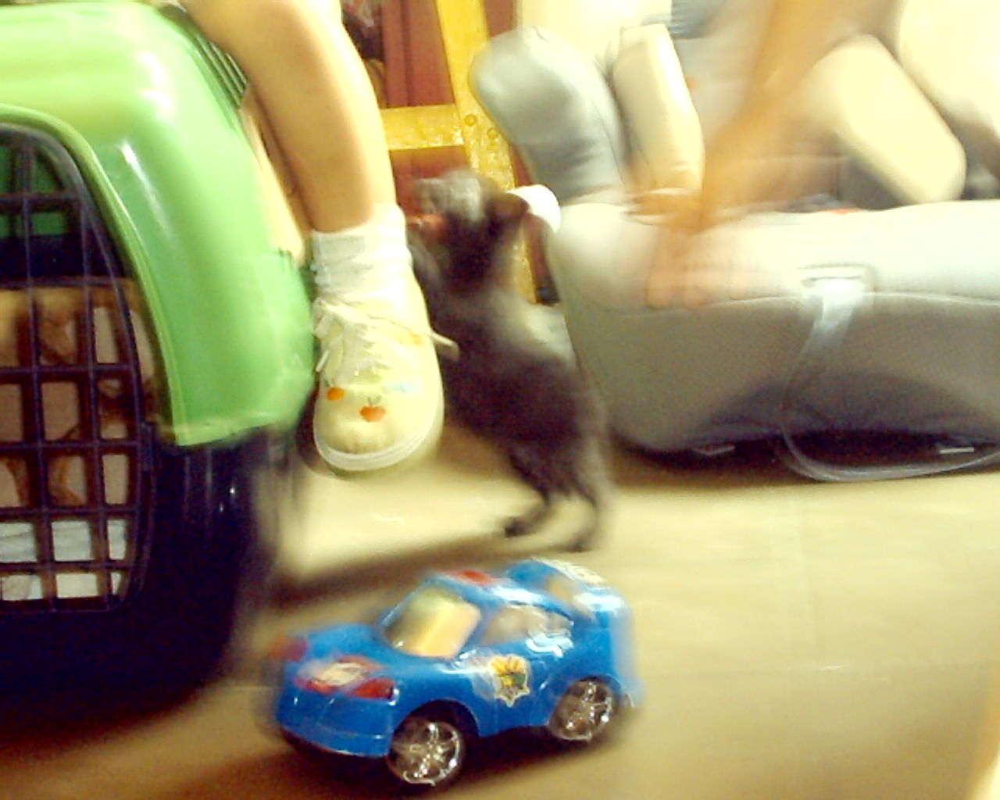
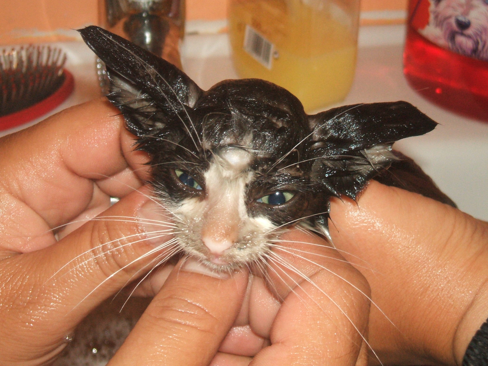
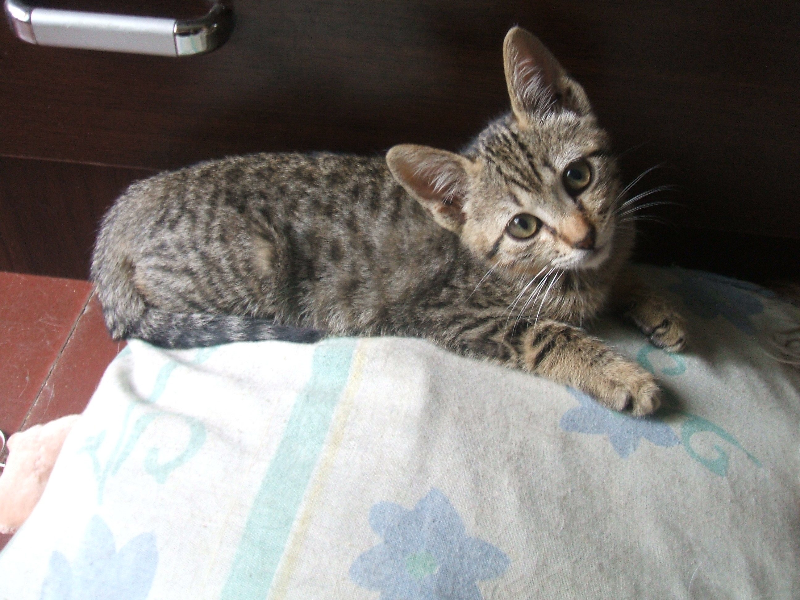
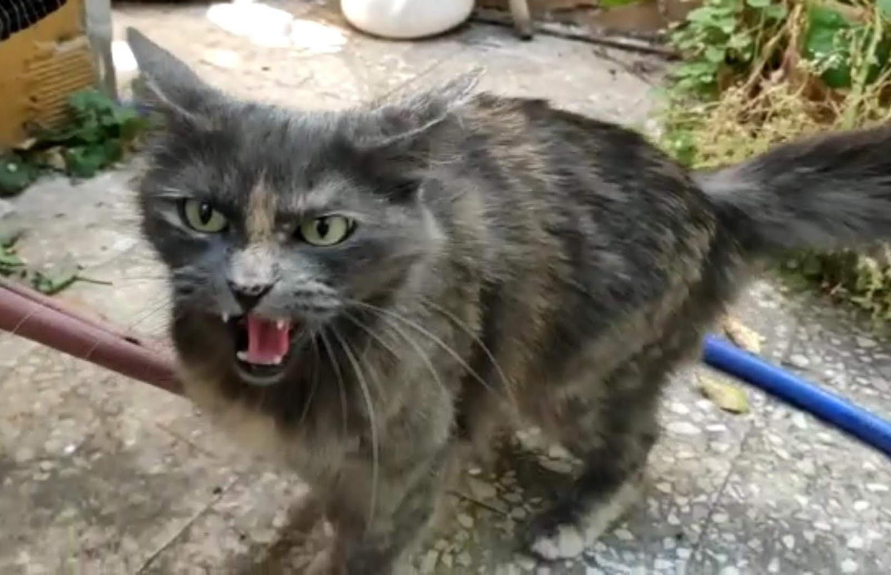
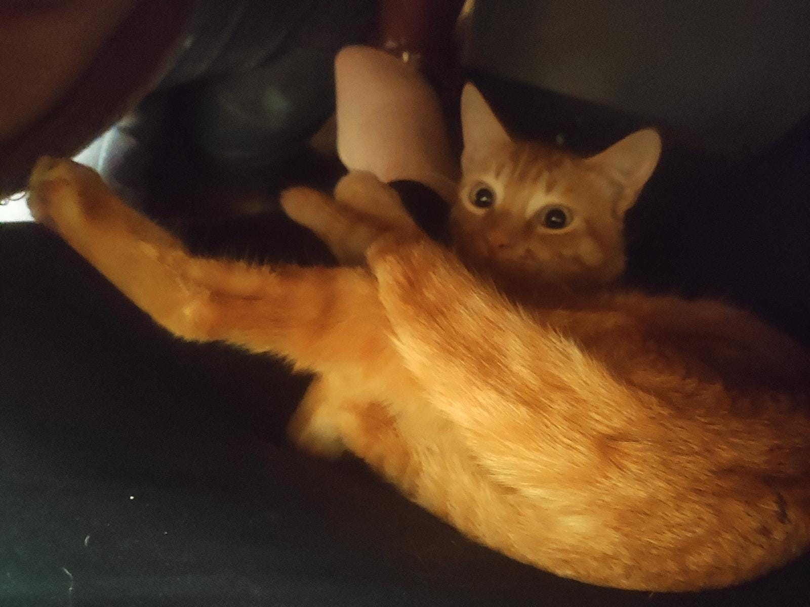
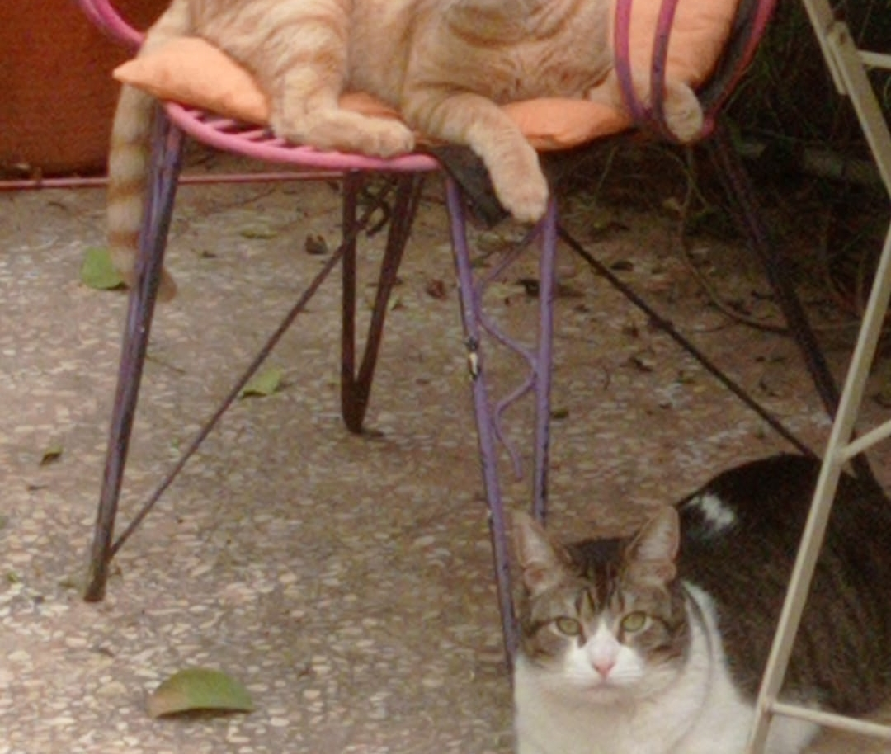

Freddy
To top NextGato malvado y siniestro, y el primero del que tengo recuerdos. Su nombre hacía honor a Freddy Krueger, pues siempre tenía las uñas fuera y listas para atacar.
Un día fui a tirarle inocentemente del rabo, como cualquier niño, y me atacó en el brazo de una forma verdaderamente violenta. Tampoco negaré que tal vez me lo merecía.
Tauita
To top NextUna gata realmente hermosa a la que una servidora bastante pequeña aún despertó el instinto maternal. Yo era su gatita bebé, siempre estaba conmigo, hasta intentaba lavarme. Un verdadero amor.
Cati
To top NextUna diva, una reina, una diosa. Si Cati hubiese vivido en tiempos egipcios, los gatos seguirían venerándose hoy día. No ha existido personalidad más fuerte, misteriosa y enigmática, a la par que arrolladora, amorosa e increíblemente sociable para ser gato.
Su único defecto: la gatofobia. Nunca soportó tener a otro gato a menos de 10 metros. Amaba a cualquier persona (siempre que ésta lo mereciese), pero nunca pudo tolerar a otro gato.
Era tan poderosa que un día, simplemente jugando, me hizo tremendo arañazo cuya cicatriz aún hoy día conservo. Y si le decías hola, respondía miau.
Denoche
To top NextGatito bebé y gracioso al que encontramos un día bastante enfermo, y cuyo nombre se debe a mi increíble originalidad infantil a la hora de poner nombres (era negro y lo encontramos por la noche, ¿cómo iba a llamarse si no?
Sentía una atracción especial por las piernecitas de mi hermano, quien de aquellas empezaba a aprender a andar, y se las mordía tanto que le cogió pánico.
Pasó su infancia en mi casa y cuando llegó a la adolescencia simplemente se fue. Fue triste, pero asumimos que nunca nos consideró su familia, sino simplemente gente buena que lo ayudó a sobrevivir y recuperarse. Denoche pertenecía a la calle.
(Un día, años después, apareció de repente un gato negro, adulto y muuuy cariñoso en nuestra casa. Aún hoy día nos gusta pensar que era Denoche haciéndonos una visitilla)
Tau
To top NextGato algo panoli que encontró mi padre en su trabajo en condiciones deplorables. El único gato que he conocido que no supiese caer de pie.
Adorablemente bueno y siempre dispuesto a amar. Era tan romántico que cuando llegó a la adolescencia y empezó a desarrollar el celo se "enamoró" perdidamente de un peluche de Doraemon que tenía mi hermano.
Tauita II
To top NextGata que nos dieron y a la que decidí bautizar como a la anterior Tauita, deseando que saliese tan cariñosa y maternal como ella. No fue el caso.
Resultó ser una gata hiperactiva, no paraba quieta, destrozó una lámpara, mi primer móvil, la tele... pero era muy divertida. Jugaba en el tobogán de al lado de casa con los demás niños.
Toge
To top NextMi soberbia y estúpida gata actual.
La adoptamos de pequeña y resultó ser un verdadero torbellino. Pasé noches sin dormir. Me mordía, arañaba, saltaba sobre mi cabeza, me traía cucarachas vivas a la cama...
Sin embargo, cuando creció sustituyó toda esa vorágine de maldad por antipatía, y si ahora se te ocurre rozarle el pelito más fino de la pata de atrás se lo toma muy a pecho y se pasa semanas enfadada contigo.
Es, en definitiva, una gata ofendidita. Pero totalmente inofensiva.
Salvatore
To top NextGatito que adoptamos hace justo un año.
Ha crecido muy bien, es ágil, grande, fuerte... y ya. La mentalidad sigue siendo idéntica a cuando tenía dos meses. Es enorme, pero juega como un gatito bebé.
Un día mi vecino decidió bufarle como un gato y desde entonces le tiene pánico.
La convivencia con Toge aún no funciona del todo bien, pero poco a poco va avanzando.
BONUS: Ragnar
To top To bottomEste gato realmente no es nuestro, sino del vecino anteriormente mencionado. Pero pasa más tiempo aquí que en su casa.
Roba comida de la cocina, también se come la de Toge y Salvatore, se duerme en mi cama, incluso de vez en cuando marca por algunas esquinas de aquí...
No obstante, es un gato muy simpático.
